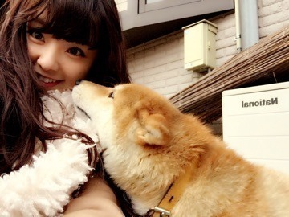
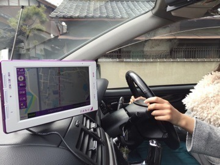
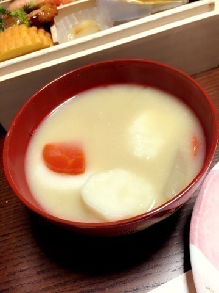
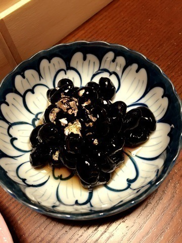
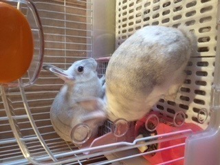

| 2015/01 06 Tue | 川村真洋 あけましておめでと うございます。まに サスケの妹。 |
～2015～
あけましておめでとうございます.＊
関西の柴犬です（＾ω＾）

和歌山のじいじいの所の柴犬まりです。
映画「マリと子犬の物語」を見て、マリと言う名にしました。
￣￣￣￣￣￣￣￣￣￣￣￣
皆さん、2014年も本当にありがとうございました。
沢山の方に支えられてきました。
色々あった1年でしたが, 沢山LIVEをすることができ，まだまだ足りないことだらけですが 私もメンバー皆も成長できた部分はあったんじゃないかな。と思います（＾ω＾）
でも2015年はもっともっと上を目指し頑張って行きたいと思います。
こんな私ですが、どうかよろしくお願いいたします。
￣￣￣￣￣￣￣￣￣￣￣￣
乃木坂ナビが、うちん家の車に（ ・□・）❤️笑

1月1日は 私の運転で大阪から和歌山のじいじいの家まで走ってみました。わら
しかも乃木坂ナビ。
自分に案内されながら走る。
よう分かりませんね(*^^*)へへ
だから色んなメンバーに案内されながら運転したよ～❤️
ちなみに高速道路は初めて走りました。
なかなか気持ちええもんですね(#^.^#)
親が運転中に写真とってくる 笑
そして毎年楽しみにしている、
大好きな御節料理も食べました❤️
関西のお雑煮。

黒豆。Love.

今年のお正月は 本当にまったり幸せな時間を過ごせました。
田舎の綺麗な空気も吸いに行けたし，
買い物もできたし，
いっぱい寝れたし，
大好きな友達にも会えたし、
エネルギーチャージされました❤️
みんなは、お正月ゆっくりできたかな？
和歌山のうさぎさん。

ファンの皆さん、スタッフの皆さん,
今年もよろしくお願い致します。
まに。